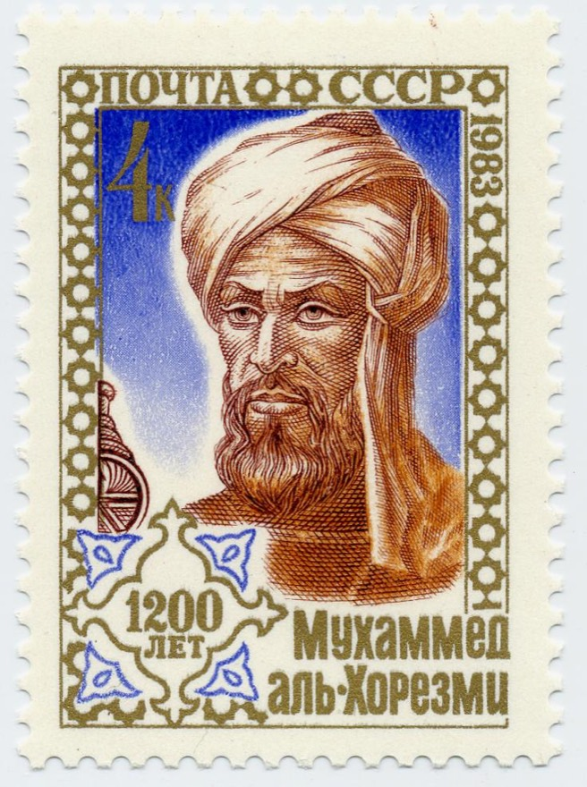
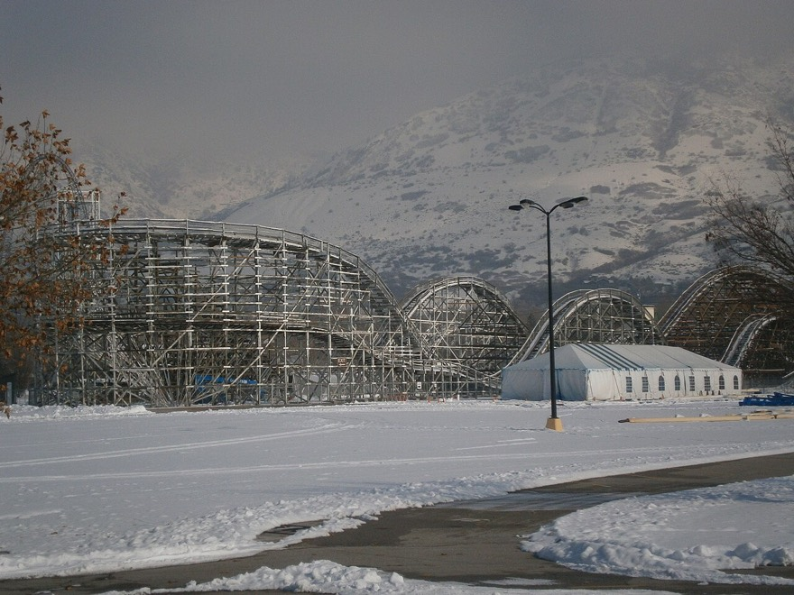

놀이공원에 갔어요. 정문에서 출발해 놀이기구를 모두 한 번씩만 타고 다시 정문으로 돌아와야 해요. 놀이기구의 위치와 거리는 놀이공원 앱으로 볼 수 있어요. 그런데 시간이 얼마 없어요!
어떤 순서로 돌아야 가장 많이 탈 수 있을까요?
코드 아래 💡 코드 설명을 펼쳐 보고, 빈칸이 있으면 채운 뒤 실행해 보세요.
교과서 · Ⅲ 1-1 알고리즘의 이해
알고리즘은 어렵고 낯선 말처럼 들리지만, 사실은 “일을 해내는 순서”예요. 라면 끓이는 순서도, 학교 가는 길도 모두 알고리즘이에요.
같은 문제를 푸는 방법이 여러 가지라면, 어떤 방법을 골라야 할까?
라면을 끓일 때 ① 물을 끓인다 → ② 면과 스프를 넣는다 → ③ 4분 기다린다 → ④ 불을 끈다 순서로 해요. 순서를 바꾸면(면을 먼저 넣고 물을 나중에?) 결과가 엉망이 되죠. 이렇게 문제를 해결하기 위해 정해 둔 순서와 방법을 알고리즘이라고 해요.

컴퓨터는 사람과 달리 눈치껏 알아서 하지 못해요. 그래서 컴퓨터에게 시킬 알고리즘은 아래 네 가지 약속을 꼭 지켜야 해요.
밖에서 자료를 받아서(입력) 결과를 1개 이상 내놓아야 해요(출력).
라면: 물·면·스프 → 라면 한 그릇
몇 단계를 거치든 반드시 끝나야 해요. 끝없이 도는 것은 알고리즘이 아니에요.
“계속 저으세요”만 있으면 영원히 못 먹어요
각 단계가 누가 읽어도 똑같이 이해되어야 해요.
“적당히 끓인다” ✗ → “4분 끓인다” ○
각 단계는 실제로 해낼 수 있는 일이어야 해요.
“물을 1초 만에 끓인다” ✗
놀이공원에 갔어요. 정문에서 출발해 놀이기구를 모두 한 번씩만 타고 다시 정문으로 돌아와야 해요. 놀이기구의 위치와 거리는 놀이공원 앱으로 볼 수 있어요. 그런데 시간이 얼마 없어요!
어떤 순서로 돌아야 가장 많이 탈 수 있을까요?

네 명의 친구가 서로 다른 생각을 내놓았어요. 이 네 가지 생각이 바로 이 단원에서 배울 네 가지 알고리즘 전략이에요.
“여기서 가장 가까운 놀이기구부터 타면 되지 않을까?”
매 순간 가장 좋아 보이는 것을 골라요. 빠르지만, 전체로 보면 가장 좋은 답이 아닐 수도 있어요.
“남은 시간보다 가는 데 더 오래 걸리는 놀이기구는 빼자.”
가망 없는 길은 끝까지 가 보지 않고 미리 잘라 내요.
“놀이공원을 구역으로 나눠서, 구역마다 길을 짠 뒤 이어 붙이자.”
큰 문제를 작은 문제로 쪼개 각각 풀고, 답을 합쳐요.
“아까 계산한 구간의 가장 빠른 길은 적어 두고 또 쓰자.”
같은 계산을 두 번 하지 않도록 답을 기억해 두고 다시 써요.
| 큰 갈래 | 어떻게 풀까 | 이 단원에서 배우는 곳 |
|---|---|---|
| 탐색 기반 알고리즘 | 가능한 답들을 하나의 ‘찾아볼 공간’으로 보고, 그 안을 돌아다니며 가장 좋은 답을 찾아요. | 2-1, 2-2 (전체 탐색 · 이진 탐색 · 탐욕법 · 분기 한정법) |
| 관계 기반 알고리즘 | 문제를 여러 조각으로 나누고, 조각들이 서로 어떻게 이어지는지(관계)를 이용해 풀어요. | 3-1, 3-2 (분할 정복법 · 동적 계획법) |
아니에요. 끝나는 조건이 없어서 유한성을 지키지 못해요. “두 번 반복한다”처럼 끝이 정해져야 알고리즘이에요.
탐욕법이에요. 매 순간 가장 좋아 보이는 선택을 해요. 다만 한 친구의 말처럼 “가장 가까운 곳을 고르는 것이 전체로 봤을 때 가장 빠른 길은 아닐 수도” 있어요.
놀이공원 최적 경로 계획하기 — 정문에서 출발해 놀이기구를 모두 한 번씩만 타고 정문으로 돌아와야 해요. 제한된 시간 안에 최대한 많이 타려면 어떤 경로로 이동해야 할까요?
단원을 다 배운 뒤 지금 쓴 생각과 비교해 보면, 내 판단이 어떻게 달라졌는지 알 수 있어요.
코드를 고쳐서 ▶ 실행하면 출력이 맞는지 바로 알려 줘요. 막히면 힌트부터 열어 보세요.
아래 라면 끓이기 절차에는 네 조건 중 지키지 못한 것이 있어요. 어느 조건을 어겼는지 쓰고, 컴퓨터도 따라 할 수 있게 고쳐 써 보세요.① 물을 적당히 붓는다 ② 물이 끓을 때까지 계속 기다린다 ③ 면을 넣고 맛있어질 때까지 끓인다
놀이공원 거리표(분)가 있어요. 탐욕법 친구는 지금 있는 곳에서 가장 가까운 놀이기구로 가려고 했는데, 코드가 엉뚱하게 가장 먼 곳으로 가요. 한 단어를 고쳐 탐욕법 경로를 출력해 보세요.
dist = {
('정문', 'A'): 3, ('정문', 'B'): 4, ('정문', 'C'): 6, ('정문', 'D'): 12,
('A', 'B'): 5, ('A', 'C'): 8, ('A', 'D'): 9,
('B', 'C'): 7, ('B', 'D'): 6, ('C', 'D'): 12,
}
def d(x, y): # 거리는 어느 방향으로 가든 같아요
return dist.get((x, y)) or dist.get((y, x))
now, path, total = '정문', ['정문'], 0
left = ['A', 'B', 'C', 'D']
while left:
nxt = max(left, key=lambda r: d(now, r)) # 다음에 갈 놀이기구 고르기
total += d(now, nxt)
path.append(nxt)
left.remove(nxt)
now = nxt
total += d(now, '정문') # 마지막에 정문으로 돌아오기
path.append('정문')
print(' → '.join(path), '/', total, '분')가장 가까운 곳 = 거리가 가장 ‘작은’ 곳이에요. max와 반대인 함수는?
dist = {
('정문', 'A'): 3, ('정문', 'B'): 4, ('정문', 'C'): 6, ('정문', 'D'): 12,
('A', 'B'): 5, ('A', 'C'): 8, ('A', 'D'): 9,
('B', 'C'): 7, ('B', 'D'): 6, ('C', 'D'): 12,
}
def d(x, y): # 거리는 어느 방향으로 가든 같아요
return dist.get((x, y)) or dist.get((y, x))
now, path, total = '정문', ['정문'], 0
left = ['A', 'B', 'C', 'D']
while left:
nxt = min(left, key=lambda r: d(now, r)) # 다음에 갈 놀이기구 고르기
total += d(now, nxt)
path.append(nxt)
left.remove(nxt)
now = nxt
total += d(now, '정문') # 마지막에 정문으로 돌아오기
path.append('정문')
print(' → '.join(path), '/', total, '분')이번엔 모든 순서(4개면 24가지)를 다 계산해서 가장 짧은 경로를 찾아요. total을 계산하는 부분을 직접 써 보세요. 결과를 앞 과제의 탐욕법(32분)과 비교해 보세요. 가까운 곳부터 고른 길이 정말 가장 빠른 길이었나요?
dist = {
('정문', 'A'): 3, ('정문', 'B'): 4, ('정문', 'C'): 6, ('정문', 'D'): 12,
('A', 'B'): 5, ('A', 'C'): 8, ('A', 'D'): 9,
('B', 'C'): 7, ('B', 'D'): 6, ('C', 'D'): 12,
}
def d(x, y): # 거리는 어느 방향으로 가든 같아요
return dist.get((x, y)) or dist.get((y, x))
from itertools import permutations
best, best_path = 999, None
for order in permutations(['A', 'B', 'C', 'D']): # 가능한 모든 순서
path = ['정문'] + list(order) + ['정문']
total = 0
# 여기에: path에서 이웃한 두 곳의 거리 d(path[i], path[i + 1])를 모두 더하기
if total < best:
best, best_path = total, path
print('가장 짧은 경로:', ' → '.join(best_path), '/', best, '분')for i in range(len(path) - 1): 로 돌면서 total += d(path[i], path[i + 1]) 를 해 보세요.
dist = {
('정문', 'A'): 3, ('정문', 'B'): 4, ('정문', 'C'): 6, ('정문', 'D'): 12,
('A', 'B'): 5, ('A', 'C'): 8, ('A', 'D'): 9,
('B', 'C'): 7, ('B', 'D'): 6, ('C', 'D'): 12,
}
def d(x, y): # 거리는 어느 방향으로 가든 같아요
return dist.get((x, y)) or dist.get((y, x))
from itertools import permutations
best, best_path = 999, None
for order in permutations(['A', 'B', 'C', 'D']): # 가능한 모든 순서
path = ['정문'] + list(order) + ['정문']
total = 0
for i in range(len(path) - 1):
total += d(path[i], path[i + 1])
if total < best:
best, best_path = total, path
print('가장 짧은 경로:', ' → '.join(best_path), '/', best, '분')해설 — ‘적당량’은 사람마다 다르게 이해해요. 누가 읽어도 똑같이 이해되어야 명확성을 지켜요.
해설 — 한 번 푼 답을 기억해 두고 다시 쓰는 것이 동적 계획법이에요.
오늘 실습에서 탐욕법 경로와 전체를 다 본 경로는 몇 분 차이가 났나요? 그 이유를 한 문장으로 적어 보세요.